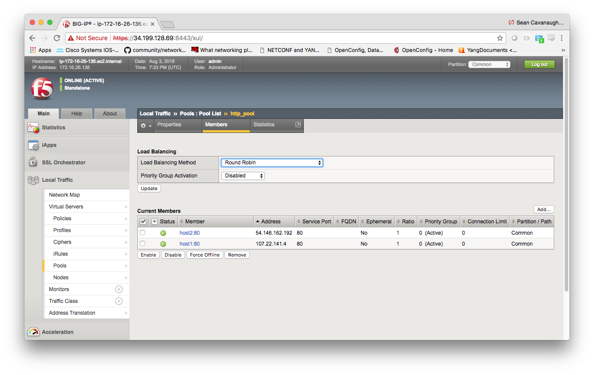

F5 Solutions for Containers > Class 9: Basic BIG-IP Configuration Management with Ansible > Section 1 - Ansible F5 Basic Exercises Source |
Exercise 1.4: Adding members to a pool on F5¶
Objective¶
Demonstrate use of the BIG-IP pool member
module
to tie web server nodes into the load balancing pool http_pool
created in the previous exercises.
Guide¶
Step 1:¶
Using your text editor of choice create a new file called
bigip-pool-members.yml.
[student1@ansible ~]$ nano bigip-pool-members.yml
vimandnanoare available on the control node, as well as Visual Studio and Atom via RDP
Step 2:¶
Enter the following play definition into bigip-pool-members.yml:
---
- name: BIG-IP SETUP
hosts: lb
connection: local
gather_facts: false
- The
---at the top of the file indicates that this is a YAML file. - The
hosts: lb, indicates the play is run only on the lb group. Technically there only one F5 device but if there were multiple they would be configured simultaneously. connection: localtells the Playbook to run locally (rather than SSHing to itself)gather_facts: falsedisables facts gathering. We are not using any fact variables for this playbook.
Do not exit the editor yet.
Step 3¶
Next, append the first task to above playbook. This task will use
the bigip_pool_member module configure the two RHEL web servers as
nodes on the BIG-IP F5 load balancer.
tasks:
- name: ADD POOL MEMBERS
bigip_pool_member:
provider:
server: "{{private_ip}}"
user: "{{ansible_user}}"
password: "{{ansible_ssh_pass}}"
server_port: 8443
validate_certs: no
state: "present"
name: "{{hostvars[item].inventory_hostname}}"
host: "{{hostvars[item].ansible_host}}"
port: "80"
pool: "http_pool"
loop: "{{ groups['webservers'] }}"
Explanation of each line within the task: - name: ADD POOL MEMBERS
is a user defined description that will display in the terminal output.
- bigip_pool_member: tells the task which module to use.
Next we have module parameters - The server: "{{private_ip}}"
parameter tells the module to connect to the F5 BIG-IP IP address, which
is stored as a variable private_ip in inventory - The provider:
parameter is a group of connection details for the BIG-IP. - The
user: "{{ansible_user}}" parameter tells the module the username to
login to the F5 BIG-IP device with - The
password: "{{ansible_ssh_pass}}" parameter tells the module the
password to login to the F5 BIG-IP device with - The
server_port: 8443 parameter tells the module the port to connect to
the F5 BIG-IP device with - The state: "present" parameter tells the
module we want this to be added rather than deleted. - The
name: "{{hostvars[item].inventory_hostname}}" parameter tells the
module to use the inventory_hostname as the name (which will be
host1 and host2). - The host: "{{hostvars[item].ansible_host}}"
parameter tells the module to add a web server IP address already
defined in our inventory. - The port: parameter tells the pool
member port. - The pool: "http_pool" parameter tells the module to
put this node into a pool named http_pool - The validate_certs: "no"
parameter tells the module to not validate SSL certificates. This is
just used for demonstration purposes since this is a lab. Finally there
is a loop parameter which is at the task level (it is not a module
parameter but a task level parameter: - loop: tells the task to loop
over the provided list. The list in this case is the group webservers
which includes two RHEL hosts.
Save the file and exit out of editor.
Step 4¶
Run the playbook - exit back into the command line of the control host and execute the following:
[student1@ansible ~]$ ansible-playbook bigip-pool-members.yml
Playbook Output¶
The output will look as follows.
[student1@ansible ~]$ ansible-playbook bigip-pool-members.yml
PLAY [BIG-IP SETUP] ************************************************************
TASK [ADD POOL MEMBERS] ********************************************************
changed: [f5] => (item=host1)
changed: [f5] => (item=host2)
PLAY RECAP *********************************************************************
f5 : ok=1 changed=1 unreachable=0 failed=0
Output parsing¶
Let’s use the bigip_device_info to collect the pool members on BIG-IP. JSON query is a powerful filter that can be used. Please go through before proceeding
[student1@ansible ~]$ nano display-pool-members.yml
Enter the following:
---
- name: "List pool members"
hosts: lb
gather_facts: false
connection: local
tasks:
- name: Query BIG-IP facts
bigip_device_info:
provider:
server: "{{private_ip}}"
user: "{{ansible_user}}"
password: "{{ansible_ssh_pass}}"
server_port: 8443
validate_certs: "no"
gather_subset:
- ltm-pools
register: bigip_device_facts
- name: "View complete output"
debug: "msg={{bigip_device_facts}}"
- name: "Show members belonging to pool"
debug: "msg={{item}}"
loop: "{{bigip_device_facts.ltm_pools | json_query(query_string)}}"
vars:
query_string: "[?name=='http_pool'].members[*].name[]"
vars:in the module is defining a variable query_string to be used within the module itselfquery_Stringwill have the name of all members from pool name ‘http_pool’. query_string is defined to make it easier to read the entire json string
Execute the playbook
[student1@ansible ~]$ ansible-playbook display-pool-members.yml
Output
[student1@ansible 1.4-add-pool-members]$ ansible-playbook display-pool-members.yml
PLAY [List pool members] ******************************************************************************************************************************************************************************
TASK [Query BIG-IP facts] *****************************************************************************************************************************************************************************
changed: [f5]
TASK [View complete output] ***************************************************************************************************************************************************************************
ok: [f5] =>
msg:
changed: true
ltm_pools:
- allow_nat: 'yes'
allow_snat: 'yes'
client_ip_tos: pass-through
client_link_qos: pass-through
full_path: /Common/http_pool
ignore_persisted_weight: 'no'
lb_method: round-robin
members:
- address: 54.191.xx.xx
connection_limit: 0
dynamic_ratio: 1
ephemeral: 'no'
fqdn_autopopulate: 'no'
full_path: /Common/host1:80
inherit_profile: 'yes'
logging: 'no'
monitors: []
name: host1:80
partition: Common
priority_group: 0
rate_limit: 'no'
ratio: 1
state: disabled
- address: 54.200.xx.xx
connection_limit: 0
dynamic_ratio: 1
ephemeral: 'no'
fqdn_autopopulate: 'no'
full_path: /Common/host2:80
inherit_profile: 'yes'
logging: 'no'
monitors: []
name: host2:80
partition: Common
priority_group: 0
rate_limit: 'no'
ratio: 1
state: disabled
minimum_active_members: 0
minimum_up_members: 0
minimum_up_members_action: failover
minimum_up_members_checking: 'no'
monitors:
- /Common/http
name: http_pool
priority_group_activation: 0
queue_depth_limit: 0
queue_on_connection_limit: 'no'
queue_time_limit: 0
reselect_tries: 0
server_ip_tos: pass-through
server_link_qos: pass-through
service_down_action: none
slow_ramp_time: 10
TASK [Show members belonging to pool] *****************************************************************************************************************************************************************
ok: [f5] => (item=host1:80) =>
msg: host1:80
ok: [f5] => (item=host2:80) =>
msg: host2:80
PLAY RECAP ********************************************************************************************************************************************************************************************
f5 : ok=3 changed=1 unreachable=0 failed=0
Solution¶
The finished Ansible Playbook is provided here for an Answer key. Click
here:
bigip-pool-members.yml.
Verifying the Solution¶
Login to the F5 with your web browser to see what was configured. Grab the IP information for the F5 load balancer from the lab_inventory/hosts file, and type it in like so: https://X.X.X.X:8443/
Login information for the BIG-IP: - username: admin - password: provided by instructor defaults to f5ansible
The pool will now show two members (host1 and host2). Click on Local Traffic-> then click on Pools. Click on http_pool to get more granular information. Click on the Members tab in the middle to list all the Members. 
You have finished this exercise. Click here to return to the lab guide